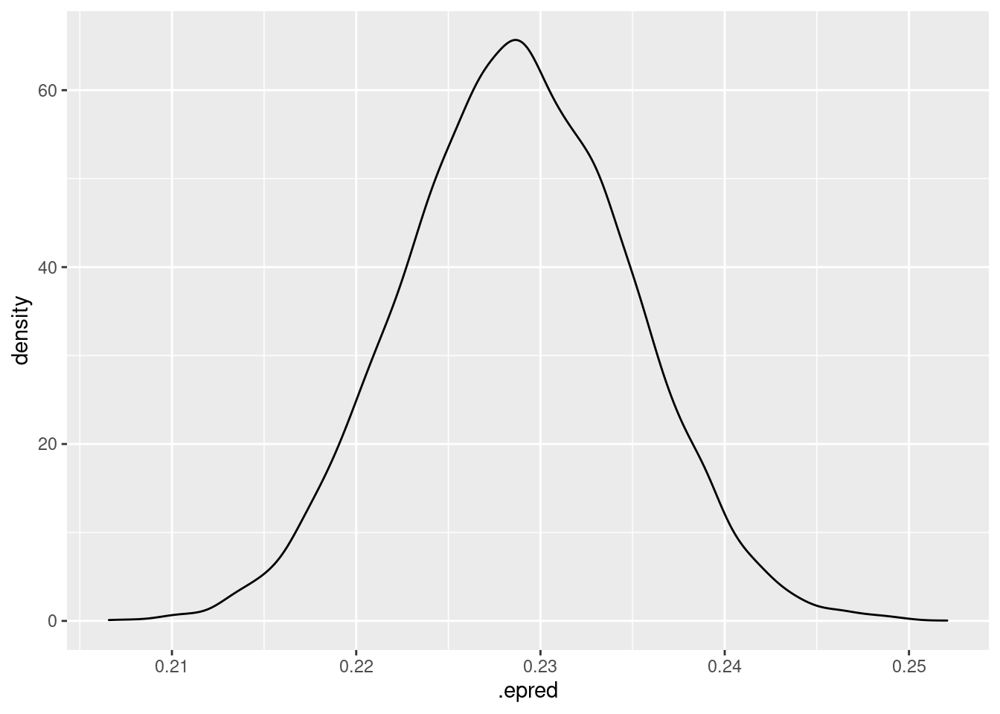

Todo el mundo anda haciendo apis para poner modelos en producción, y oye, está bien. Si además lo complementas con dockerizarlo para tener un entorno controlado y que te valga para ponerlo en cualquier sitio dónde esté docker instalado pues mejor.
Aquí voy a contar un ejemplo de como se puede hacer con R usando plumber y docker, en siguentes post contaré como hacerlo con vetiver que es una librería que está para R y Python que tiene algún extra, como versionado de modelos y demás.
Lo primero de todo es trabajar en un proyecto nuevo y usar renv. renv es para gestionar entornos de R, ojo que también funciona bien si tienes que mezclar R y python. Tiene cosas interesantes como descubrir las librerías que usas en tu proyecto y aún mejor, si estas librerías ya las tienes instaladas pues te crea enlaces simbólicos a dónde están y te permite ahorrar un montón de espacio, que al menos yo, no he conseguido ver cómo hacer eso con conda.
Objetivo
Mi objetivo es ver cómo pondría un modelo bayesiano ajustado con brms para que me devuelva predicciones puntuales y las posterioris en un entorno de producción.
Entrenando modelo
Para eso voy a usar datos de un antiguo post.
Una vez que estemos en ese nuevo proyecto, ajustamos y guardamos un modelo .
library(tidyverse)## ── Attaching packages ─────────────────────────────────────── tidyverse 1.3.2 ──
## ✔ ggplot2 3.3.6 ✔ purrr 0.3.5
## ✔ tibble 3.1.8 ✔ dplyr 1.0.10
## ✔ tidyr 1.2.1 ✔ stringr 1.4.1
## ✔ readr 2.1.3 ✔ forcats 0.5.2
## ── Conflicts ────────────────────────────────────────── tidyverse_conflicts() ──
## ✖ dplyr::filter() masks stats::filter()
## ✖ dplyr::lag() masks stats::lag()library(brms)## Loading required package: Rcpp
## Loading 'brms' package (version 2.18.0). Useful instructions
## can be found by typing help('brms'). A more detailed introduction
## to the package is available through vignette('brms_overview').
##
## Attaching package: 'brms'
##
## The following object is masked from 'package:stats':
##
## arlibrary(cmdstanr)## Warning: package 'cmdstanr' was built under R version 4.3.0## This is cmdstanr version 0.5.2
## - CmdStanR documentation and vignettes: mc-stan.org/cmdstanr
## - Use set_cmdstan_path() to set the path to CmdStan
## - Use install_cmdstan() to install CmdStan## Using all cores. 12 in my machine, y que haga las cadenas en paralelo
options(mc.cores = parallel::detectCores())
set_cmdstan_path("~/cmdstan/")## CmdStan path set to: /home/jose/cmdstantrain <- read_csv(here::here("data/train_local.csv"))## Rows: 662 Columns: 5
## ── Column specification ────────────────────────────────────────────────────────
## Delimiter: ","
## chr (3): segmento, tipo, edad_cat
## dbl (2): valor_cliente, n
##
## ℹ Use `spec()` to retrieve the full column specification for this data.
## ℹ Specify the column types or set `show_col_types = FALSE` to quiet this message.# guiña a librería antigua
car::some(train)## # A tibble: 10 × 5
## segmento tipo valor_cliente edad_cat n
## <chr> <chr> <dbl> <chr> <dbl>
## 1 Rec SM 2 21- 40 4
## 2 Best SM 1 41-50 475
## 3 Best C 4 >60 2807
## 4 No_way C 1 41-50 356
## 5 No_way B 5 40-60 221
## 6 Rec SF 2 >60 152
## 7 Rec B 4 40-60 194
## 8 Best C 5 41-50 4934
## 9 No_way B 3 41-50 1064
## 10 No_way SF 8 41-50 29Ajustamos un modelo bayesiano con efectos aleatorios y usando la columna n como pesos de las filas. (leer el post dónde usé estos datos para saber más)
train <- train %>%
mutate(target1 = as_factor(ifelse(segmento == "Best", "Best", "Other")))
formula <- brmsformula(
target1| resp_weights(n) ~ (1 | edad_cat) + (1 | valor_cliente) + (1 | tipo)
)
mod <- brm(
formula,
family = "bernoulli", data = train,
iter = 4000, warmup = 1000, cores = 4, chains = 4,
seed = 10,
backend = "cmdstanr",
refresh = 0) # refresh 0 qu eno quiero que se me llene el post de los output de las cadenas mcm
saveRDS(mod, here::here("brms_model.rds"))Comprobamos que nuestro modelo funciona
library(tidybayes)##
## Attaching package: 'tidybayes'## The following objects are masked from 'package:brms':
##
## dstudent_t, pstudent_t, qstudent_t, rstudent_tmod_reload <- readRDS(here::here("brms_model.rds"))
#
test <- read_csv(here::here("data/test_local.csv"))## Rows: 656 Columns: 5## ── Column specification ────────────────────────────────────────────────────────
## Delimiter: ","
## chr (3): segmento, tipo, edad_cat
## dbl (2): valor_cliente, n
##
## ℹ Use `spec()` to retrieve the full column specification for this data.
## ℹ Specify the column types or set `show_col_types = FALSE` to quiet this message.# estimacion puntual
predict(mod_reload, head(test))## Estimate Est.Error Q2.5 Q97.5
## [1,] 0.23216667 0.4222324 0 1
## [2,] 0.13233333 0.3388669 0 1
## [3,] 0.16075000 0.3673155 0 1
## [4,] 0.13825000 0.3451766 0 1
## [5,] 0.12716667 0.3331735 0 1
## [6,] 0.07333333 0.2606937 0 1# full posterior
# para 6 filas guarda los valores obtenidos en las 3000 iteraciones de cada cadena
# 3000 * 4 * 6 = 72000 valores
posterior_pred <- add_epred_draws(head(test), mod_reload)
head(posterior_pred )## # A tibble: 6 × 10
## # Groups: segmento, tipo, valor_cliente, edad_cat, n, .row [1]
## segmento tipo valor_cliente edad_cat n .row .chain .itera…¹ .draw .epred
## <chr> <chr> <dbl> <chr> <dbl> <int> <int> <int> <int> <dbl>
## 1 Rec C 0 21- 40 132 1 NA NA 1 0.230
## 2 Rec C 0 21- 40 132 1 NA NA 2 0.234
## 3 Rec C 0 21- 40 132 1 NA NA 3 0.233
## 4 Rec C 0 21- 40 132 1 NA NA 4 0.230
## 5 Rec C 0 21- 40 132 1 NA NA 5 0.232
## 6 Rec C 0 21- 40 132 1 NA NA 6 0.226
## # … with abbreviated variable name ¹.iterationdim(posterior_pred)## [1] 72000 10Para la primer fila podemos tener la distribución a posteriori
posterior_pred %>%
filter(.row == 1) %>%
ggplot(aes(x=.epred)) +
geom_density() 
Pues listo, ya tenemos el modelo entrenado y guardado, ahora sólo queda escribir el código para la api y el Dockerfile..
Creando el plumber.R
Una cosa importante, si hemos usado renv es escribir el fichero con las dependencias que usamos. Eso se hace con renv::snapshot() y se crea un fichero dónde están descritas las dependencias versionadas de nuestro proyecto.
Pero quizá para el docker no necesitemos todas, en este caso, partiendo del fichero anterior nos creamos otro con sólo las dependencias necesarias. Yo lo he llamado vetiver_renv.lock porque empecé trasteando con vetiver y soy demasiado vago como para cambiar ahora el nombre. El contenido del fichero es
vetiver_renv.lock
{
"R": {
"Version": "4.2.1",
"Repositories": [
{
"Name": "binarios",
"URL": "https://packagemanager.rstudio.com/all/latest"
},
{
"Name": "ropenspain",
"URL": "https://ropenspain.r-universe.dev"
}
]
},
"Packages": {
"plumber": {
"Package": "plumber",
"Version": "1.2.1",
"Source": "Repository",
"Repository": "RSPM",
"Hash": "8b65a7a00ef8edc5ddc6fabf0aff1194",
"Requirements": [
"R6",
"crayon",
"ellipsis",
"httpuv",
"jsonlite",
"lifecycle",
"magrittr",
"mime",
"promises",
"rlang",
"sodium",
"stringi",
"swagger",
"webutils"
]
},
"brms": {
"Package": "brms",
"Version": "2.18.0",
"Source": "Repository",
"Repository": "RSPM",
"Hash": "afcb0d871e1759b68b29eb6affd37a10",
"Requirements": [
"Matrix",
"Rcpp",
"abind",
"backports",
"bayesplot",
"bridgesampling",
"coda",
"future",
"ggplot2",
"glue",
"loo",
"matrixStats",
"mgcv",
"nleqslv",
"nlme",
"posterior",
"rstan",
"rstantools",
"shinystan"
]
},
"tidybayes": {
"Package": "tidybayes",
"Version": "3.0.2",
"Source": "Repository",
"Repository": "RSPM",
"Hash": "d501501261b724f35ec9f2b80f4421b5",
"Requirements": [
"arrayhelpers",
"coda",
"dplyr",
"ggdist",
"ggplot2",
"magrittr",
"posterior",
"rlang",
"tibble",
"tidyr",
"tidyselect",
"vctrs",
"withr"
]
}
}
}
Cómo veis también he añadido la librería tidybayes, porque me va a resultar útil para sacar la posteriori de las predicciones de los nuevos datos.
Creamos el fichero plumber.R que no es más que decir cómo se va a predecir y crear un par de endpoints que permiten tanto obtener estimaciones puntuales como la full posterior. Con la librería plumber se hace fácil sin más que usar decoradores.
Fichero plumber.R
library(brms)
library(plumber)
library(tidybayes)
brms_model <- readRDS("brms_model.rds")
#* @apiTitle brms predict Api
#* @apiDescription Endpoints for working with brms model
## ---- filter-logger
#* Log some information about the incoming request
#* @filter logger
function(req){
cat(as.character(Sys.time()), "-",
req$REQUEST_METHOD, req$PATH_INFO, "-",
req$HTTP_USER_AGENT, "@", req$REMOTE_ADDR, "\n")
forward()
}
## ---- post-data
#* Submit data and get a prediction in return
#* @post /predict
function(req, res) {
data <- tryCatch(jsonlite::parse_json(req$postBody, simplifyVector = TRUE),
error = function(e) NULL)
if (is.null(data)) {
res$status <- 400
return(list(error = "No data submitted"))
}
predict(brms_model, data) |>
as.data.frame()
}
#* @post /full_posterior
function(req, res) {
data <- tryCatch(jsonlite::parse_json(req$postBody, simplifyVector = TRUE),
error = function(e) NULL)
if (is.null(data)) {
res$status <- 400
return(list(error = "No data submitted"))
}
add_epred_draws(data, brms_model)
}No tiene mucho misterio, los endpoint se crean usando
#* @post /nombre_endpoingy creando una función que va a tomar los datos que le pasemos en formato json a la api, los pasa a data.frame y usa el modelo previamente cargado para obtener las estimaciones puntuales en un caso y la full posterior (con add_epred_draws) en el otro.
Creamos el docker
Iba a contar lo que es docker, pero mejor lo miráis en su web. Sólo quedarnos con la idea que es como tener una máquina virtual que puedo usar en otro sitio, pero es mucho más ligera y puede usar cosas del sistema anfitrión e interactuar con él.
Para crear nuestra imagen docker tenemos que crear un fichero que se llame Dockerfile dónde vamos a ir diciéndole como cree nuestra máquina virtual.
Es importante que estén los ficheros anteriores, el modelo salvado , el plumber.R y el fichero .lock en las rutas correctas dónde los busca el Dockerfile, en mi caso, lo he puesto todo en el mismo sitio.
Contendido del Dockerfile
# Docker file para modelo brms
FROM rocker/r-ver:4.2.1
ENV RENV_CONFIG_REPOS_OVERRIDE https://packagemanager.rstudio.com/cran/latest
RUN apt-get update -qq && apt-get install -y --no-install-recommends \
default-jdk \
libcurl4-openssl-dev \
libicu-dev \
libsodium-dev \
libssl-dev \
make \
zlib1g-dev \
libxml2-dev \
libglpk-dev \
&& apt-get clean
COPY vetiver_renv.lock renv.lock
RUN Rscript -e "install.packages('renv')"
RUN Rscript -e "renv::restore()"
## Copio el modelo y el fichero de la api
COPY brms_model.rds /opt/ml/brms_model.rds
COPY plumber.R /opt/ml/plumber.R
EXPOSE 8081
ENTRYPOINT ["R", "-e", "pr <- plumber::plumb('/opt/ml/plumber.R'); pr$run(host = '0.0.0.0', port = 8081)"]
Importante que el puerto que se exponga con EXPOSE sea el mismo que usa el plumber, en este caso el 8081.
Ahora para construir la imagen docker y ejecutarla
docker build -t mi_modelo_brms .
Y despues de un rato podemos ejecutarlo mapeando el puerto
nohup docker container run --rm -p 8081:8081 mi_modelo_brms & ¿Funciona?
Podemos usar curl, python, php o cualquier otra cosa para mandar peticiones a la api y que nos devuelva predicciones, con R sería algo así.
test %>%
head(2) ## # A tibble: 2 × 5
## segmento tipo valor_cliente edad_cat n
## <chr> <chr> <dbl> <chr> <dbl>
## 1 Rec C 0 21- 40 132
## 2 Best B 0 41-50 19base_url <- "http://0.0.0.0:8081"
api_res <- httr::POST(url = paste0(base_url, "/predict"),
body = head(test),
encode = "json")
predicted_values <- httr::content(api_res, as = "text", encoding = "UTF-8")
jsonlite::fromJSON(predicted_values)## Estimate Est.Error Q2.5 Q97.5
## 1 0.2283 0.4198 0 1
## 2 0.1356 0.3424 0 1
## 3 0.1604 0.3670 0 1
## 4 0.1320 0.3385 0 1
## 5 0.1215 0.3267 0 1
## 6 0.0737 0.2612 0 1api_res2 <- httr::POST(url = paste0(base_url, "/full_posterior"),
body = head(test,1),
encode = "json")
posterior_values <- httr::content(api_res2, as = "text", encoding = "UTF-8")
jsonlite::fromJSON(posterior_values) %>%
head(100)## segmento tipo valor_cliente edad_cat n .row .draw .epred
## 1 Rec C 0 21- 40 132 1 1 0.2297
## 2 Rec C 0 21- 40 132 1 2 0.2341
## 3 Rec C 0 21- 40 132 1 3 0.2330
## 4 Rec C 0 21- 40 132 1 4 0.2296
## 5 Rec C 0 21- 40 132 1 5 0.2321
## 6 Rec C 0 21- 40 132 1 6 0.2256
## 7 Rec C 0 21- 40 132 1 7 0.2211
## 8 Rec C 0 21- 40 132 1 8 0.2215
## 9 Rec C 0 21- 40 132 1 9 0.2259
## 10 Rec C 0 21- 40 132 1 10 0.2245
## 11 Rec C 0 21- 40 132 1 11 0.2330
## 12 Rec C 0 21- 40 132 1 12 0.2263
## 13 Rec C 0 21- 40 132 1 13 0.2262
## 14 Rec C 0 21- 40 132 1 14 0.2426
## 15 Rec C 0 21- 40 132 1 15 0.2307
## 16 Rec C 0 21- 40 132 1 16 0.2348
## 17 Rec C 0 21- 40 132 1 17 0.2293
## 18 Rec C 0 21- 40 132 1 18 0.2281
## 19 Rec C 0 21- 40 132 1 19 0.2304
## 20 Rec C 0 21- 40 132 1 20 0.2277
## 21 Rec C 0 21- 40 132 1 21 0.2283
## 22 Rec C 0 21- 40 132 1 22 0.2355
## 23 Rec C 0 21- 40 132 1 23 0.2297
## 24 Rec C 0 21- 40 132 1 24 0.2257
## 25 Rec C 0 21- 40 132 1 25 0.2191
## 26 Rec C 0 21- 40 132 1 26 0.2275
## 27 Rec C 0 21- 40 132 1 27 0.2328
## 28 Rec C 0 21- 40 132 1 28 0.2312
## 29 Rec C 0 21- 40 132 1 29 0.2190
## 30 Rec C 0 21- 40 132 1 30 0.2370
## 31 Rec C 0 21- 40 132 1 31 0.2303
## 32 Rec C 0 21- 40 132 1 32 0.2252
## 33 Rec C 0 21- 40 132 1 33 0.2190
## 34 Rec C 0 21- 40 132 1 34 0.2269
## 35 Rec C 0 21- 40 132 1 35 0.2311
## 36 Rec C 0 21- 40 132 1 36 0.2309
## 37 Rec C 0 21- 40 132 1 37 0.2313
## 38 Rec C 0 21- 40 132 1 38 0.2361
## 39 Rec C 0 21- 40 132 1 39 0.2335
## 40 Rec C 0 21- 40 132 1 40 0.2414
## 41 Rec C 0 21- 40 132 1 41 0.2333
## 42 Rec C 0 21- 40 132 1 42 0.2283
## 43 Rec C 0 21- 40 132 1 43 0.2354
## 44 Rec C 0 21- 40 132 1 44 0.2314
## 45 Rec C 0 21- 40 132 1 45 0.2357
## 46 Rec C 0 21- 40 132 1 46 0.2240
## 47 Rec C 0 21- 40 132 1 47 0.2241
## 48 Rec C 0 21- 40 132 1 48 0.2355
## 49 Rec C 0 21- 40 132 1 49 0.2260
## 50 Rec C 0 21- 40 132 1 50 0.2268
## 51 Rec C 0 21- 40 132 1 51 0.2278
## 52 Rec C 0 21- 40 132 1 52 0.2213
## 53 Rec C 0 21- 40 132 1 53 0.2246
## 54 Rec C 0 21- 40 132 1 54 0.2316
## 55 Rec C 0 21- 40 132 1 55 0.2313
## 56 Rec C 0 21- 40 132 1 56 0.2209
## 57 Rec C 0 21- 40 132 1 57 0.2269
## 58 Rec C 0 21- 40 132 1 58 0.2323
## 59 Rec C 0 21- 40 132 1 59 0.2280
## 60 Rec C 0 21- 40 132 1 60 0.2357
## 61 Rec C 0 21- 40 132 1 61 0.2275
## 62 Rec C 0 21- 40 132 1 62 0.2387
## 63 Rec C 0 21- 40 132 1 63 0.2387
## 64 Rec C 0 21- 40 132 1 64 0.2231
## 65 Rec C 0 21- 40 132 1 65 0.2370
## 66 Rec C 0 21- 40 132 1 66 0.2313
## 67 Rec C 0 21- 40 132 1 67 0.2243
## 68 Rec C 0 21- 40 132 1 68 0.2335
## 69 Rec C 0 21- 40 132 1 69 0.2275
## 70 Rec C 0 21- 40 132 1 70 0.2340
## 71 Rec C 0 21- 40 132 1 71 0.2250
## 72 Rec C 0 21- 40 132 1 72 0.2373
## 73 Rec C 0 21- 40 132 1 73 0.2259
## 74 Rec C 0 21- 40 132 1 74 0.2405
## 75 Rec C 0 21- 40 132 1 75 0.2227
## 76 Rec C 0 21- 40 132 1 76 0.2210
## 77 Rec C 0 21- 40 132 1 77 0.2337
## 78 Rec C 0 21- 40 132 1 78 0.2306
## 79 Rec C 0 21- 40 132 1 79 0.2242
## 80 Rec C 0 21- 40 132 1 80 0.2235
## 81 Rec C 0 21- 40 132 1 81 0.2247
## 82 Rec C 0 21- 40 132 1 82 0.2188
## 83 Rec C 0 21- 40 132 1 83 0.2129
## 84 Rec C 0 21- 40 132 1 84 0.2415
## 85 Rec C 0 21- 40 132 1 85 0.2293
## 86 Rec C 0 21- 40 132 1 86 0.2312
## 87 Rec C 0 21- 40 132 1 87 0.2189
## 88 Rec C 0 21- 40 132 1 88 0.2236
## 89 Rec C 0 21- 40 132 1 89 0.2262
## 90 Rec C 0 21- 40 132 1 90 0.2317
## 91 Rec C 0 21- 40 132 1 91 0.2316
## 92 Rec C 0 21- 40 132 1 92 0.2288
## 93 Rec C 0 21- 40 132 1 93 0.2299
## 94 Rec C 0 21- 40 132 1 94 0.2288
## 95 Rec C 0 21- 40 132 1 95 0.2311
## 96 Rec C 0 21- 40 132 1 96 0.2264
## 97 Rec C 0 21- 40 132 1 97 0.2269
## 98 Rec C 0 21- 40 132 1 98 0.2287
## 99 Rec C 0 21- 40 132 1 99 0.2283
## 100 Rec C 0 21- 40 132 1 100 0.2191Seguramente usar una api para obtener la posteriori que tiene tantos valores para cada dato no sea lo más eficiente, porque lo devuelve en formato json y luego hay que convertirlo a data.frame, pero funciona.
Salvar docker en un tar.gz
Si no tenemos un sitio estilo docker hub dónde registrar nuestros docker o por cualquier otra causa, podemos usar docker save para generar un fichero comprimido y docker load para importarlo.
Sería algo así como
docker save mi_modelo_brms | gzip > mi_modelo_brms_docker.tar.gzCopiar ese tar.gz a dónde toque
docker load < mi_modelo_brms_docker.tar.gzAdelanto con vetiver
Con la librería vetiver se simplifica todo este proceso, puesto que crea por ti el plumber.R y el dockerfile y tiene movidas para guardar la monitorización del modelo y demás. Está tanto para R como para python. En R soporta los modelos que estén en tidymodels y en python soporta scikit-learn, statmodels, xgboost y creo que también pytorch